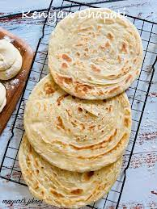

Chapatis

Description
Another fave in this household, you'll love it!
Ingredients
- Wheat flour
- Salt
- Oil
- Water
Steps
- Mix the flour and salt
- Add in the oil and mix it in with your fingrtips so it breaks down
- Add in warm water a little at a time while mixing and kneading until it forms a soft dough. It shouldn't be sticky
- Cut the dough into small balls of the same size
- Roll out a ball into a circle and heat it on both sides on a pan
- Add a little bit of oil on the pan then repeat it
- Do the same thing for all the balls